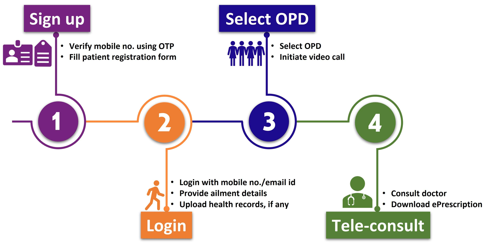

about us
Patient to Doctor Telemedicine is the remote delivery of healthcare services where patients can consult with doctors via video calls, phone calls, or text messaging. It allows for diagnosis, treatment, and prescription of medications without the need for in-person visits. This method is convenient, saves time, and expands access to healthcare, though it may be limited by the inability to perform physical exams and potential technical issues, Thus providing all these services is our speciality.
Read more
